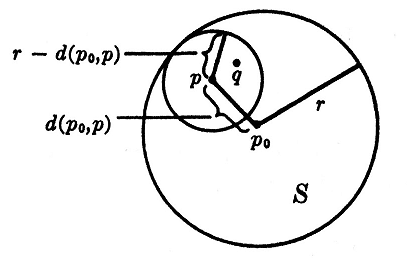
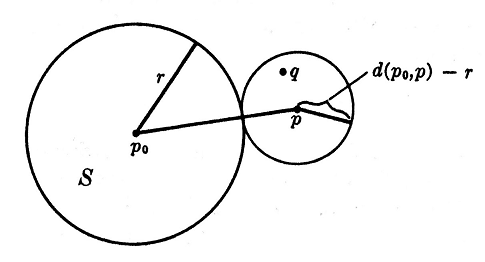

Proposition: Cauchy Schwarz inequality.
For any vectors in \(R^n\) with \(\mathbf{u} = \langle u_1,u_2,u_3,...u_n \rangle \) and \( \mathbf{v} = \langle v_1,v_2,v_3,...v_n \rangle\) we have
$$|\mathbf{u}\cdot \mathbf{v}| \leq |\mathbf{u}||\mathbf{v}|$$
Proposition: Euclidean space is a metric space
For any positive integer \(n\) we define a metric space \(E^n\), called the \(n\)-dimensional Euclidean space, by taking the underlying set of \(E^n\) to be all \(n\)-tuples of real numbers \(\{(a_1,...,a_n):a_1,...,a_n \in \mathbb{R}\}\), and defining, for \(p = (x_1,...,x_n),\)\(q = (y_1,...y_n)\),
$$d(p,q) = \sqrt{(x_1-y_1)^2 + (x_2-y_2)^2 + ... + (x_n - y_n)^2}$$
Proof:
The first three metric space axioms are trivial to verify for Euclidean space. It remains, however, to prove the fourth. First let's prove the triangle inequality for Euclidean space. Let \(\mathbf{a} = \langle a_1,..., a_n\rangle \text{ and } \mathbf{b} = \langle b_1, ... , b_n \rangle\). Then we have:
$$|\mathbf{a} + \mathbf{b}|^2 = (a_1+b_1)^2 + (a_2+b_2)^2 + ... (a_n+b_n)^2$$
$$ = |\mathbf{a}|^2 + |\mathbf{b}|^2 + 2(\mathbf{a}\cdot\mathbf{b})$$
$$\leq |\mathbf{a}|^2 + |\mathbf{b}|^2 + 2|\mathbf{a}||\mathbf{b}| \text{ (by Cauchy-Schwarz)}$$
$$\leq (|\mathbf{a}|+|\mathbf{b}|)^2$$
$$\therefore |\mathbf{a}+\mathbf{b}| \leq |\mathbf{a}| + |\mathbf{b}|$$
Now let \(p = (x_1,...,x_n),q = (y_1,...,y_n),r=(z_1,...,z_n)\) be points in the Euclidean space.
$$d(p,r) = \sqrt{(x_1-z_1)^2 + ... + (x_n-z_n)^2}$$
$$ = \sqrt{((x_1-y_1)+(y_1-z_1))^2 + ... +((x_n-y_n)+(y_n-z_n))^2 }$$
$$ \leq \sqrt{(x_1-y_1)^2 + ... + (x_n-y_n)^2} + \sqrt{(y_1-z_1)^2 + ... + (y_n-z_n)^2} \text{ (by triangle inequality)}$$
$$\therefore d(p,r) \leq d(p,q) + d(q,r) \qquad \Box$$
Let \(E\) be a metric space, \(p_0 \in E\), and \(r > 0\) a real number.
The open ball in \(E\) center \(p_0\) and radius \(r\) is the subset of \(E\) given by:
$$\{p \in E : d(p_0,p) < r\}$$
The closed ball in \(E\) center \(p_0\) and radius \(r\) is the subset of \(E\) given by:
$$\{p \in E : d(p_0,p) \leq r\}$$
A subset \(S\) of \(E\) is open if, for each \(p \in S\), \(S\) contains some open ball of center \(p\).
A subset \(S\) of \(E\) is closed if it's complement \(S^\complement\) is open.
Proposition: Examples of Open Sets.
For any metric space \(E\),
the subset \(\emptyset\) is open.
the subset \(E\) is open.
the union of any collection of open subsets of \(E\) is open.
the intersection of a finite number of open subsets of \(E\) is open.
an open ball is an open set.
Proof:
The proof for the first two examples of open sets is trivial. Example number 3 is also clear: if you take any point in the union, it has to belong to some open subset, hence it must be contained in an open ball which is contained in the union.
To prove 4, let \(S_1,S_2,...S_n\) be the finite collection of open subsets of \(E\). If \(p \in \cap S\), then for every \(i \in \mathbb{N} : 1 \leq i \leq n\) we have \(p \in S_i\), which means that \(\exists\) an open ball of radius \(r_i\) centered at \(p\) contained in \(S_i\) (as \(S_i\) is open). Then, it is clear that the open ball centered at \(p\) with a radius of \(\text{min}\{r_1,r_2,...,r_n\}\) is contained in each \(S_i\), and hence is contained in the union.
Note that this argument does not work for an infinite collection of open subsets, as it is possible that "\(\text{g.l.b.}\{r_1,r_2,...\}\)" may be \(0\), and for an open set we need that \(r > 0\).
The idea for the proof that an open ball is an open set is shown in the image below:

We wish to prove that the open ball \(S\) centered at \(p_0\) with radius \(r\) is an open set. To do so, pick an arbitrary point \(p\) inside \(S\), and consider the open ball centered at \(p\) with radius \((r - d(p_0,p))\). Any point \(q\) within this smaller ball satisfies:
$$d(p,q) < r - d(p_0,p) \text{ , Hence}$$
$$d(p_0,q) \leq d(p_0,p) + d(p,q) < d(p_0,p) + (r - d(p_0,p)) = r$$
Thus \(q \in S\), thus there is always a ball around \(p\) in \(S\), thus the open ball \(S\) is an open set.
Proposition: Examples of Closed Sets
For any metric space \(E\):
the subset \(E\) is closed.
the subset \(\emptyset\) is closed.
the intersection of any collection of closed subsets of \(E\) is closed.
the union of a finite number of closed subsets of \(E\) is closed.
a closed ball is a closed set.
Proof:
The first four examples of closed sets follow immediately from taking the complement of the first four examples of open sets in the previous proposition. We prove the fifth similarly to the way we proved that an open ball is an open set:

Let \(S\) be the closed ball of center \(p_0 \in E\) with radius \(r\) and let \(p \in S^\complement\). Then \(d(p_0,p) > r\), so \(d(p_0,p) - r > 0\) and we can consider the open ball of center \(p\) and radius \(d(p_0,p)-r\). For any point \(q\) in the latter open ball we have \(d(p,q) < d(p_0,p) - r\), so that
$$d(p_0,q) = d(p_0,q) + d(q,p) - d(p,q) \geq d(p_0,p) - d(p,q) > r$$
Thus the open ball of center \(p\) and radius \(d(p_0,p) - r\) is entirely contained in \(S^\complement\), so that \(S^\complement\) is open. Thus \(S\) is closed.
A subset \(S\) of a metric space \(E\) is bounded if it is contained in some ball.
Let \(p_1,p_2,p_3,...\) be a sequence of points in the metric space \(E\). A point \(p \in E\) is called a limit of the sequence \(p_1,p_2,p_3,...\) if $$\forall \epsilon > 0 : \exists N \in \mathbb{N} : [(n > N) \implies (d(p,p_n) < \epsilon)]$$If the sequence has limit, we call the sequence convergent.
Proposition: Behaviour of Limits
A sequence of points \(p_1,p_2,p_3,...\) in a metric space \(E\) has at most one limit.
Any subsequence of a convergent sequence of points in a metric space converges to the same limit.
If \(a_1,a_2,a_3,...\) and \(b_1,b_2,b_3,...\) are convergent sequecnes of real numbers, with limits \(a\) and \(b\) respectively, then:
$$\lim_{n \rightarrow \infty} (a_n + b_n) = a + b$$
$$\lim_{n \rightarrow \infty} (a_n - b_n) = a - b$$
$$\lim_{n \rightarrow \infty} a_nb_n = ab$$
and, if \(b\) and each \(b_n\) is nonzero: $$\lim_{n \rightarrow \infty} \frac{a_n}{b_n} = \frac{a}{b}$$
If \(a_1,a_2,a_3,...\) and \(b_1,b_2,b_3,...\) are convergent sequences of real numbers, with limits \(a\) and \(b\) respectively, and if \(a_n \leq b_n\) for all \(n\), then \(a \leq b\)
A bounded monotonic sequence of real numbers is convergent.
Proofs:
Suppose \(p,q \in E\) are both limits of the sequence \(p_1,p_2,p_3,...\) in \(E\).
Then for any \(\epsilon > 0\), there are positive integers \(N, N'\) such that \(d(p,p_n) < \epsilon\) if \(n > N\) and \(d(q,p_n) < \epsilon\) if \(n > N'\).
For \(n > \text{max}\{N,N'\}\), we have: $$d(p,q) \leq d(p,p_n) + d(p_n,q) < \epsilon + \epsilon = 2\epsilon$$
But if \(\epsilon = \frac{d(p,q)}{100}\), we have \(d(p,q) \leq \frac{d(p,q)}{50}\), which is a contradiction if \(p \neq q\)! Hence there cannot be two different limits to the same sequence.
Consider the sequence \(p_1,p_2,p_3,...\) that converges to a limit \(p\).
We know that $$\forall \epsilon > 0 : \exists N \in \mathbb{N} : n > N \implies d(p,p_n) < \epsilon$$
Consider a subsequence \(p_{n_1},p_{n_2},p_{n_3},...\) with \(n_1,n_2,n_3,...\) a monotonic increasing sequence of positive integers.
We want to show that $$\forall \epsilon > 0: \exists M \in \mathbb{N} : m > M \implies d(p,p_{n_m}) < \epsilon$$
This fact however trivially follows from the convergence of our original sequence \(p\).
Therefore if we set \(N = \text{max}\{N_1,N_2\}\), then \(n > N\) imples that
$$|(a+b)-(a_n+b_n)| = |(a-a_n)+(b-b_n)|$$
$$\leq |a-a_n|+|b-b_n|$$
$$<\frac{\epsilon}{2} + \frac{\epsilon}{2} = \epsilon$$
\(\therefore (a_n + b_n)\) converges to \((a+b)\)
The proof of this statement is similar to the proof of (i) with some sign changes.
The sequences \(a_n\) and \(b_n\) are both convergent, hence they are both bounded. (After a certain number of terms \(n\), all the terms in a convergent sequence are within some radius of the limit. You can then center a ball at the limit with it's radius large enough to encompass the finite number of points before \(n\) and the infinite tail that lies within \(\epsilon\) of the limit.)
Choose an \(M \in \mathbb{R}\) such that \(|a_n| < M\) and \(|b_n| < M\).
Choose \(N \in \mathbb{N}\) such that $$n > N \implies |a - a_n| < \frac{\epsilon}{2M} \text{ and } |b-b_n| < \frac{\epsilon}{2M}$$
To prove this fact, let's prove instead that \(\lim_{n\rightarrow \infty} (\frac{1}{b_n}) = \frac{1}{b}\), then we can use part (iii) to show that \(\lim_{n\rightarrow \infty} (\frac{a_n}{b_n}) = \lim_{n\rightarrow \infty} (a_n\frac{1}{b_n}) = a\cdot \frac{1}{b} = \frac{a}{b}\)
Given an \(\epsilon > 0\), choose \(N\) such that if \(n > N\) then $$|b - b_n| < \text{min}\{\frac{|b|}{2},\frac{|b|^2\epsilon}{2}\}$$
Then if \(n > N\) we have $$|b_n| = |b - (b - b_n)| \geq |b| - |b - b_n| > |b| - \frac{|b|}{2} = \frac{|b|}{2}$$
But \((b_n - a_n) \geq 0\), which is a contradiction! Hence \(c \geq 0\)
Suppose that \(a_1,a_2,a_3,...\) is a bounded increasing sequence of numbers. Let \(a\) be the least upper bound of the sequence.
For any \(\epsilon > 0 : \exists N : (a - \epsilon) < a_N \leq a\) by definition of the least upper bound.
It follows that \(\forall n > N : |a-a_n| < \epsilon\), so \(a_n\) converges to \(a\). Hence all monotonic bounded sequences converge (in the case that its monotonic decreasing, just reverse the signs of this proof)
Theorem: Closed sets contain their Limit Points.
Let \(S\) be a subset of the metric space \(E\). Then \(S\) is closed if and only if, whenever \(p_1,p_2,p_3,...\) is a sequence of points of \(S\) that is convergent in \(E\), we have $$\lim_{n \rightarrow \infty} p_n \in S$$
Proof:
We want to show that $$S \text{ is closed} \iff \lim_{n \rightarrow \infty} p_n = p \in S$$
To prove that \((S \text{ is closed}) \Rightarrow p \in S\):
If \(p \notin S\), then \(p \in S^\complement\):
Since \(S\) is closed, then \(S^\complement\) is open, and \(\exists \epsilon > 0 : S^\complement\) contains a ball of center \(p\) and radius \(\epsilon\).
Thus if \(N \in \mathbb{N}\) such that \((n > N) \Rightarrow d(p,p_n) < \epsilon\), we have \((n > N) \Rightarrow (p_n \in S^\complement)\), which is a contradiction!
Hence \((S \text{ is closed}) \Rightarrow \lim_{n \rightarrow \infty} p_n \in S \)
To prove that \(p \in S \Rightarrow (S \text{ is closed})\):
Suppose that \(S\) is not closed. That means that \(S^\complement\) is not open, and \(\exists p \in S^\complement\) such that any open ball of center \(p\) contains points of \(S\).
Hence for each \(n\) we can find \(p_n \in S\) such that \(d(p,p_n) < \frac{1}{n}\), which forces \(p_n\) to limit to \(p \in S^\complement\), which contradicts our assumption!
Hence \(\lim_{n \rightarrow \infty} p_n \in S \Rightarrow (S \text{ is closed.})\)
A sequence of points \(p_1,p_2,p_3,...\) in a metric space is a Cauchy Sequence if, given any real number \(\epsilon > 0\), there is a positive integer \(N\) such that \(d(p_n,p_m) < \epsilon\) whenever \(n,m > N\).
Proposition: Behaviour of Cauchy Sequences.
A convergent sequence of points in a metric space is a Cauchy sequence.
Any subsequence of a Cauchy sequence is a Cauchy sequence.
A cauchy sequence of points in a metric space is bounded.
A cauchy sequence that has a convergent subsequence is itself convergent.
Proof:
Suppose that \(p_1,p_2,p_3,...\) converges to \(p\). Then \(\forall \epsilon > 0 : \exists N : (n > N) \Rightarrow (d(p,p_n) < \frac{\epsilon}{2}).\) Hence, if \(n,m > N\) we have: $$d(p_n,p_m) \leq d(p_n,p) + d(p,p_m) < \frac{\epsilon}{2} + \frac{\epsilon}{2} = \epsilon$$
The proof of this is trivial, similar in flavor to proving that any subsequence of a convergent sequence converges to the same limit.
Suppose that \(p_1,p_2,p_3,...\) is a Cauchy sequence, and \(\epsilon > 0\). Now, \(\exists N: d(p_n,p_m) < \epsilon\) given \(n,m > N\). Then the entire sequence must be contained in the closed ball (for a given \(\epsilon, m\)) centered at \(p_m\) with radius $$\text{max}\{d(p_m,p_1),d(p_m,p_2),...,d(p_m,p_N),\epsilon\}$$
Let \(p_1,p_2,p_3,...\) be the Cauchy sequence, and let \(p\) be the limit of a convergent subsequence. For \(\epsilon > 0\), let \(N\) be such that \(n,m > 0 \Rightarrow d(p_n,p_m) < \frac{\epsilon}{2}\). Now, fix an integer \(m > N\) such that \(p_m\) is in the convergent subsequence and close enough to it's limit \(p\) such that \(d(p,p_m) < \frac{\epsilon}{2}\). Then for \(n > N\) we have: $$d(p,p_n)\leq d(p,p_m) + d(p_m,p_n) < \frac{\epsilon}{2} + \frac{\epsilon}{2} = \epsilon$$
A metric space \(E\) is complete if every Cauchy sequence of points of \(E\) converges to a point of \(E\).
Proposition: Examples of Complete metric spaces.
A closed subset of a complete metric space is a complete metric space.
\(\mathbb{R}\) is complete.
For any positive integer \(n\), \(E^n\) is complete.
Proofs:
A Cauchy sequence of points in a closed subset of a complete metric space is also a Cauchy Sequence of points in the total complete metric space, and by the definition of complete must converge to a point in the complete metric space. However, we also know that closed sets contain their limit points, hence the Cauchy Sequence in the closed subset must converge to a point in that closed subset, hence the closed subset is also complete.
Let \(a_1,a_2,a_3,...\) be a Cauchy sequence of real numbers. To show that \(\mathbb{R}\) is complete, we have to show this sequence conveges to a real number.
We know from previous proofs that all Cauchy sequences are bounded.
We now prove a lemma: that in any sequence of real numbers, there must be a monotonic subsequence.
Suppose we have a sequence \(b_1,b_2,b_3,...\) of real numbers. Call a number \(n\) 'bottomed out' if \(\forall m > n : a_m > a_n\).
If infinitely many \(n\) are 'bottomed out', then the list of 'bottomed out' numbers form a monotonic increasing subsequence.
If only finitely many \(n\) are 'bottomed out', then \(\forall m > N\) where \(N\) is the largest 'bottomed out' \(n\), we are guarenteed to be able to find an \(x\) such that \(a_x < a_m\) (because there are no larger 'bottomed out' numbers). Hence, we can construct a decreasing sequence.
Hence, we can construct a monotonic subsequence of the Cauchy sequence, that is guarenteed to be bounded, and we know that bounded monotonic sequences must converge to a real number.
But we also know that a Cauchy sequence that has a convergent subsequence is itself convergent, hence we have shown that all Cauchy sequences of real numbers are convergent, and hence that \(\mathbb{R}\) is complete.
Here we prove that \(E^3\) is complete; the proof for \(E^n\) is essentially the same thing. We have to show that a Cauchy sequence \(p_1,p_2,p_3,...\) of points in \(E^3\) has a limit. Let \(p_n = (x_n,y_n,z_n)\)
Given \(\epsilon > 0: \exists N : n,m > N \Rightarrow d(p_n,p_m) < \epsilon\)
Therefore we have that \(|x_n-x_m|,|y_n-y_m|,|z_n-z_m| < \epsilon\) when \(n,m > N\). This means that \(x_n,y_n,z_n\) are all cauchy sequences in \(\mathbb{R}\), and hence converge to limits \(x,y,z\). We shall now prove that our sequence \(p_n\) converges to \(p = (x,y,z)\).
Thereofre \(\lim_{n\rightarrow \infty} p_n = p\), therefore \(E^n\) is complete.
A subset \(S\) of a metric space \(E\) is compact if, whever \(S\) is contained in the union of a collection of open subsets of \(E\), then \(S\) is contained in the union of a finite number of these open subsets.
If \(E\) is a metric space, \(S\) a subset of \(E\), and \(p\) a point of \(E\), then \(p\) is a cluster point of \(S\) if any open ball with center \(p\) contains an infinite number of points of \(S\).
Proposition: Compact Sets
Any closed subet of a compact metric space is compact.
A compact subset of a metric space is bounded. In particular, a compact metric space is bounded.
Let \(S_1,S_2,S_3,...\) be a sequence of nonempty closed subsets of a compact metric space, with the property that \(S_1 \supset S_2 \supset S_3 \supset ...\) Then there is at least one point that belongs to each of the sets \(S_1,S_2,S_3,...\)
An infinite subset of a compact metric space has at least one cluster point.
Any sequence of points in a compact metric space has a convergent subsequence.
A compact metric space is complete.
A compact subset of a metric space is closed.
Any closed bounded subset of \(E^n\) is compact.
Proof:
Let the closed subset \(S\) of the compact metric space \(E\) be contained in the union of a collection of open subsets of \(E\), say \(S \subset \bigcup_{i \in I} U_i\), where each \(U_i\) is an open subset of \(E\), and \(i\) ranges over an indexing family \(I\). Then \(E \subset (\bigcup_{i \in I}U_i) \cup S^\complement\). Since \(S\) is closed, \(S^\complement\) is open, so by the compactness of \(E\) we can find a finite subset \(J \subset I\) such that \(E \subset (\bigcup_{i \in J} U_i)\cup S^\complement\). Hence \(S \subset \bigcup_{i \in J} U_i\). This shows that \(S\) is compact.
A compact set can be contained in the union of every ball possible in the metric space. Thus, because it is compact, it is contained within the union of a finite number of these balls. Hence, it must be bounded.
Suppose that there does not exist a point that belongs to each of the sets \(S_1,S_2,S_3,...\). Then it must be true that \(\bigcap_{n = 1,2,3,...} S_n = \emptyset\), implying that \(\bigcup_{n = 1,2,3,...} S_n^\complement\) is the entire metric space \(E\). Since \(E\) is compact it is the union of a finite number of these open subsets \(S_1^\complement,S_2^\complement,S_3^\complement,...\). Since \(S_1^\complement \subset S_2^\complement \subset S_3^\complement...\), we must have \(E = S_n^\complement\) for some \(n\), which produces the contradiction that \(S_n = \emptyset\).
Suppose we have a compact metric space \(E\), and an infinite subset of this set \(S\). Suppose that \(S\) has no cluster points. That implies that for every point in \(E\), we can find an open ball around the point containing only a finite number of points in \(S\). However, the union of all these balls is \(E\). Because \(E\) is compact, is is also a union of only finitely many of these balls. Since each ball contains only a finite number of points of \(S\), this would imply that \(S\) is finite, a contradiction. Hence for an infinite subset \(S\) of a compact metric space \(E\), there must be a cluster point.
Let \(p_1,p_2,p_3,...\) be a sequence in the metric space \(E\). We now have two cases, whether the set \(\{p_1,p_2,p_3,...\}\) is infinite or not.
Suppose that the set of the points in the sequence is infinite. Then it must be the case that the set of the points in the sequence has a cluster point, say \(p \in E\). Now we can form a sequence of terms in our original sequence that limits to this cluster point. Pick a \(p_{n_1}\) such that it lies inside the open ball centered at \(p\) with radius 1. Now pick a \(p_{n_2}\) such that it lies inside the open ball centered at \(p\) with radius \(\frac{1}{2}\), and with \(n_2 > n_1\). This second point is guarenteed to exist because within every open ball centered at \(p\) there are infinitely many points of the original sequence contained inside. Continuing in this fashion, we can construct a subsequence that converges to \(p\).
Suppose that the set of points in the sequence is finite. Then one of the points must occur an infinite number of times. We can then simply choose this infinite repetition as a subsequence, which trivially converges.
Any Cauchy sequence has a convergent subsequence (by the previous proposition), and any Cauchy sequence with a convergent subsequence is itself convergent. Hence Compact metric spaces are complete.
Any convergent sequence of points is a Cauchy sequence, and all Cauchy sequences were shown to converge in compact metric spaces. Hence, all convergent sequences have thier limit inside the compac subset, and hence the subset must be closed.
Suppose that there exists a closed, bounded subset \(S\) of \(E^n\) that is not compact.
There must be a collection of opern subsets \(\{U_i\}\) of \(E^n\) whose union contains \(S\), but such that the union of any finite subcollection of \(U_i\) does not contain \(S\).
Since \(S\) is bounded, \(S\) is contained in the union of a finite number of closed balls of radius \(\frac{1}{2}\), say \(B_1,B_2,...B_r\) such that $$S = (S \cap B_1) \cup (S\cap B_2) \cup ... (S \cap B_r)$$
At least one of the sets \((S \cap B_1), (S \cap B_2), ...\) say \((S \cap B_j)\) is not contained in any finite subcollection of \(\{U\}\).
Take this set \(S\cap B_j\), and call it \(S_1\). Now, perform the same argument on \(S_1\), with balls of radius \(\frac{1}{3}\), to obtain an \(S_2\), balls of radius \(\frac{1}{4}\) to obtain an \(S_3\), and so on.
Now pick \(p_n \in S_n\). \(p_n\) is a Cauchy sequence, and converges to \(p_0 \in S\). Hence \(p_0\) is contained in some \(U_j\). \(U_j\) is open however, so there is some ball around \(p_0\) contained in \(U_j\). However, for extremely large \(N\), \(S_N\) approaches a ball of negligible size, and \(p_0\) is contained in \(S_N\). Therefore, for large enough \(N\), \(S_N \subset U_j\). But that means \(S_N\) has a finite subcover, which is a contradiction!
Hence any closed, bounded subset of \(E^n\) is compact
A metric space \(E\) is connected if the only subsets of \(E\) which are both open and closed are \(E\) and \(\emptyset\). A subset \(S\) of a metric space is a connected subset if the subpsace \(S\) is connected.
Proposition: Connected Sets
Any subset of \(\mathbb{R}\) which contains two distinct points \(a\) and \(b\) and does not contain all points between \(a\) and \(b\) is not connected.
Let \(\{S_i\}_{i \in I}\) be a collection of connected subsets of a metric space \(E\). Suppose there exists \(i_0 \in I\) such that for each \(i \in I\) the sets \(S_i\) and \(S_{i_0}\) have a nonempty intersection. Then \(\bigcup_{i\in I} S_i\) is connected.
\(\mathbb{R}\), or any open or closed interval in \(\mathbb{R}\), is connected.
Proofs:
Suppose that \(a < c < b\) and that \(S\) is a subset of \(\mathbb{R}\) with \(a,b \in S\), \(c \notin S\). Then we have:
$$S = (S \cap \{x \in \mathbb{R} : x < c\}) \cup (x \in \mathbb{R} : x > c)$$
Now the left set is an open subset of \(S\) (not of \(\mathbb{R}\) necessarily, of \(S\).). The right set is also an open subset of \(S\), which would imply that the left set is a closed set (because the left set is the complement of the right set). Hence the left is is a subset of \(S\) that is both open and closed, yet it is neither \(\emptyset\) or \(S\) itself. Hence \(S\) cannot be connected.
Suppose that \(S = \bigcup_{i \in I} S_i\) is not connected, which implies that there is some subset \(A \subset S\) such that \(A\) is neither \(\emptyset\) not \(S\) itself, and that \(A\) is both open and closed. This means that \(A^{\complement}\), which we will call \(B\), is also an open subset of \(S\).
$$\forall i \in I : S_i = (A \cap S_i) \cup (B \cap S_i)$$
expresses the connected set \(S_i\) as the union of two disjoint open subsets, so that \((A \cap S_i)\) and \((B \cap S_i)\) are just the sets \(S_i, \emptyset\) in some order. Without loss of generality we may assume that \(A \cap S_{i_0} = S_{i_0}\).
$$ A \supset S_{i_0} \implies \forall i \in I : A \cap S_i \neq \emptyset$$
$$A \cap S_i = S_i , B \cap S_i = \emptyset$$
Since \(B \cap S_i = \emptyset\) for all \(i\), we have \(B = \emptyset\), a contradiction.
Suppose we have a set \(S\) such that \(S\) contains all points between any two of its points. Suppose first that \(S\) is not connected, so that we can write it in terms of two disjoint nonempty sets:
$$S = A \cup B$$
Choose \(a \in A , b \in B, a < b\). Then, by assumption, \([a,b] \subset S\). Set \(A_1 = A \cap [a,b], B_1 = B \cap [a,b]\). Now \(B_1\) is an open subset of \([a,b]\), so \(A_1\) is a closed subset of \([a,b]\), and hence a closed subset of \(\mathbb{R}\). Given that \(A_1\) is closed, nonempty, and bounded, it must have a largest element \(c\). We must also have \(c < b\) because \(c \in [a,b]\) and \(b \in B_1\) which is disjoint from \(A_1\). But since \(A_1\) is an open subset of \([a,b]\) it must contain some ball around \(c\) as \(c < b\), hence it must contain elements greater than its greatest element, a contradiction.